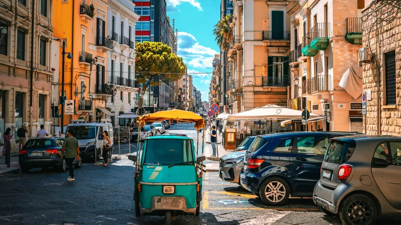

ITALY
687 Italy
Plan and travel through Italy with Intelligent Day, NOW, Nearby, Budget, Prevent, Guardian, Signals, Rescue, translation and navigation in one country-focused companion.
Trains, airports, driving rules, food, language and safety — clear answers to the questions travelers actually ask, checked against official sources.
 JAPAN · ITINERARYNEWKyoto in 2 days: the perfect first-timer itineraryFushimi Inari, Kiyomizu-dera, Gion, Arashiyama and Kinkaku-ji in the right order.Read the guide →
JAPAN · ITINERARYNEWKyoto in 2 days: the perfect first-timer itineraryFushimi Inari, Kiyomizu-dera, Gion, Arashiyama and Kinkaku-ji in the right order.Read the guide →
ITALY · DRIVINGRenting a car in Italy: what you need to knowDocuments, insurance, deposit, ZTL, tolls and the fines tourists get.Read the guide → JAPAN · TRANSPORTTokyo to Kyoto: Shinkansen, bus or flight?Door-to-door times, prices, the Mount Fuji seat and big luggage rules.Read the guide →
JAPAN · TRANSPORTTokyo to Kyoto: Shinkansen, bus or flight?Door-to-door times, prices, the Mount Fuji seat and big luggage rules.Read the guide → ITALY · ITINERARIESRome, Florence and Venice in 7 daysDay-by-day plan by high-speed train, what to book and the Venice fee.Read the guide →
ITALY · ITINERARIESRome, Florence and Venice in 7 daysDay-by-day plan by high-speed train, what to book and the Venice fee.Read the guide → JAPAN · ITINERARIESTokyo, Kyoto and Osaka in 7 daysFirst-timer Golden Route day by day, Shinkansen times and the JR Pass math.Read the guide →
JAPAN · ITINERARIESTokyo, Kyoto and Osaka in 7 daysFirst-timer Golden Route day by day, Shinkansen times and the JR Pass math.Read the guide → JAPAN · TRAINSIs the JR Pass worth it in 2026?New 2026 prices, the quick math and cheaper alternatives.Read the guide →
JAPAN · TRAINSIs the JR Pass worth it in 2026?New 2026 prices, the quick math and cheaper alternatives.Read the guide → JAPAN · AIRPORTSNarita and Haneda Airport to TokyoSkyliner, Narita Express, buses and Haneda trains — prices and times.Read the guide →
JAPAN · AIRPORTSNarita and Haneda Airport to TokyoSkyliner, Narita Express, buses and Haneda trains — prices and times.Read the guide →Each 687 app uses the same travel system, then adapts the experience to the country itself.
Plan and travel through Italy with Intelligent Day, NOW, Nearby, Budget, Prevent, Guardian, Signals, Rescue, translation and navigation in one country-focused companion.

The 687 travel system adapted to Japan: intelligent day tools, Guardian alerts with earthquake warnings, Shinkansen and domestic flight planning, Nearby on Apple Maps, English menu help, two-way conversation translation and 8 app languages.
High-speed trains (Frecce and Italo) are cheaper when booked early and can sell out at peak times. Regional trains have fixed prices and can be bought on the day. See our Trenitalia vs Italo guide.
Yes. IC cards like Suica and PASMO work on most trains, subways and buses and in many shops. See our Suica and PASMO guide.
A limited traffic zone in historic centers. Entering without a permit triggers a camera fine, often months later through your rental company. See our ZTL guide.
687 is a family of country-focused apps. The core travel system stays familiar while local information and tools adapt to each destination.
It is the daily travel layer that connects Today, NOW, Budget, Prevent, Guardian, Signals and Rescue so you can understand the day and adapt it without starting again from zero.
Guardian is designed to keep important travel context and changes visible while you are moving, so you do not need to constantly check several disconnected services.
No. 687 helps you decide where you need to go and then works with supported navigation services for the actual route.
Open the page for the destination you want. Each developed product page contains its official store area for App Store and Google Play availability.
687 is a family of country-focused travel companion apps. Each edition combines trip planning, daily travel tools and destination-specific context in one familiar system.
687 helps you organize the transport and stays that shape the trip, including international flights, domestic connections, trains, hotels and transfers, so they remain connected to the itinerary.
Yes. 687 is designed for trips that move through several cities, with stops, stays, transfers, bookings and travel goals connected inside one route.
Yes. Timed reservations, tours, fixed commitments and important travel goals can be kept visible while you build and adapt the itinerary.
687 can include car-rental days and road stages in the trip structure, then connect the plan to supported navigation services when it is time to drive.
Yes. The planning layer remains useful during the trip, while tools such as Intelligent Day, NOW, Nearby, Prevent, Guardian, Budget, translation and navigation help with day-to-day decisions.